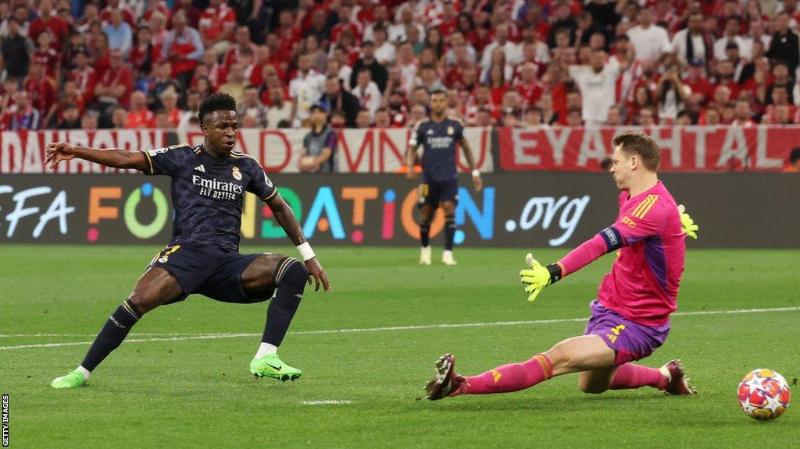
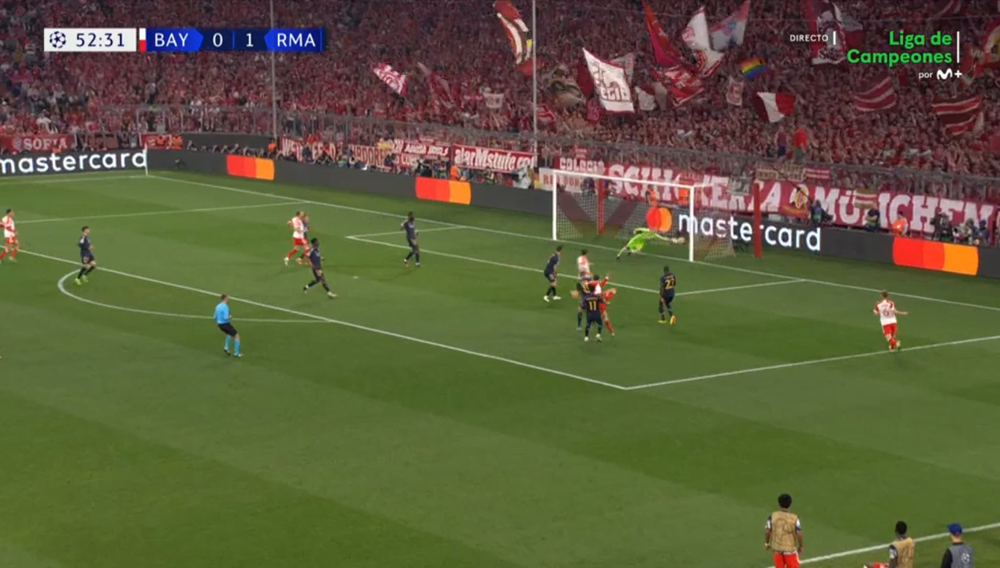
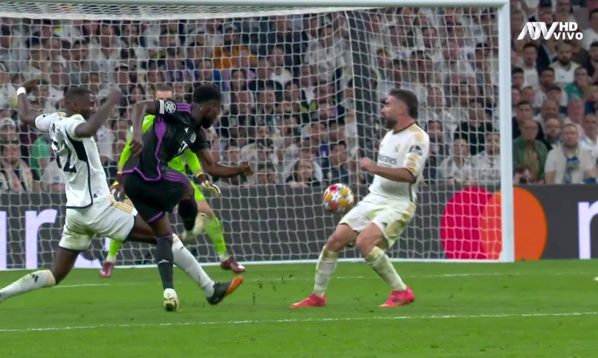
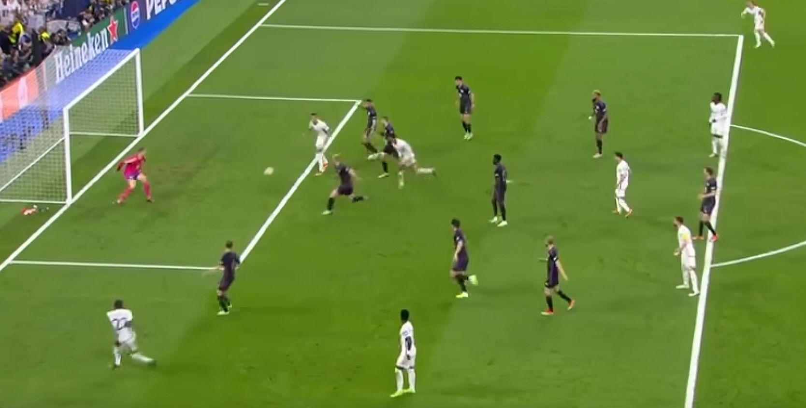

Las semifinales de esta edición fueros de las mejores semifinales que se han disputado ultimamente, la primera semifinal se disputó entre el Real Madrid-Bayern de Munich y la segunda semifinal se disputó entre PSG-Borrussia Dortmund
El partido de ida se disputaba en el campo del Bayern Munich, el Alianz Arena
El Real Madrid se adelanta con un gol de Vinicius Junior, con asistencia de Kroos
El Bayern Munich empataría el partido con un zurdazo de Leroy Sané
El Bayern de Munich se adelantó con un penalti anotado por Harry Kane en el minuto 58

En el minuto 83, Vinicius igualaría el partido con un penalti
El resultado final se quedó en un 2-2, el pase a la final se decidió en el campo del Real Madrid
EL partido de vuelta se disputaba en el campo del Real Madrid, el Santiago Bernabeu
No pasó mucho en todo el partido, se generaban ocasiones que no acababan en gol, pero en el minuto 68 Alphonso Davies marcó un golazo para darle la ventaja al Bayern
Cuando el partido parecía acabado llegó Joselu, el delantero del Real Madrid que aprovechó un error del portero alemán y empató el partido

Heróicamente, Joselu volvió a marcar un gol en el minuto 91 para dar la victoria y el pase a la final para el Real Madrid
